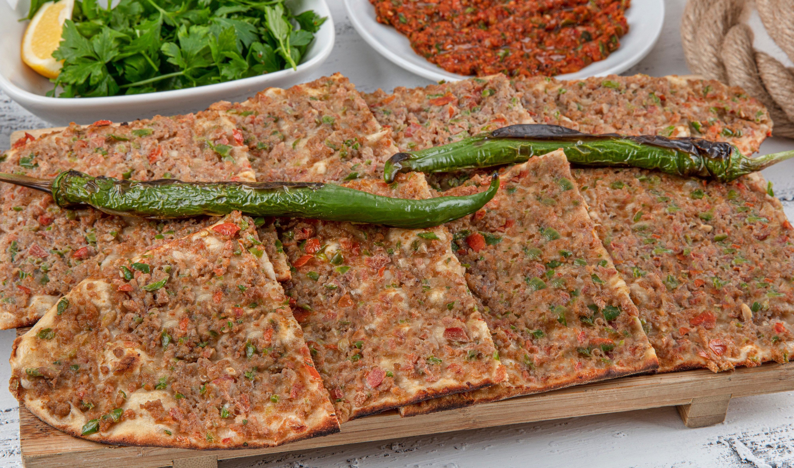

Konya’nın en meşhur lezzeti olan Etli Ekmek, sadece bir yemek değil, yüzlerce yıllık bir geleneğin parçasıdır. Bu eşsiz lezzeti tanımak için bilinmesi gerekenler:
Tarihi ve Konya İçin Önemi
Etli ekmeğin geçmişi, Konya’nın Selçuklu Devleti’ne başkentlik yaptığı zamanlara kadar uzanır. Eskiden insanlar evlerinde hazırladıkları iç harcı mahallelerindeki fırınlara götürür, orada taze hamurla pişirtirlerdi. Bu yüzden etli ekmek, Konya’da komşuluk ve paylaşma kültürünü temsil eder.
Etli Ekmeğin Farkı Nedir?
Etli ekmeği diğer şehirlerde yediğimiz pidelerden ayıran en önemli özellikler şunlardır:
• İnce ve Çıtır: Hamuru kağıt kadar ince açılır ve fırından çıtır çıtır çıkar.
• Boyu Çok Uzun: Gerçek bir etli ekmek yaklaşık 1 metre uzunluğundadır. Masaya koca bir tahtanın üzerinde boylu boyunca gelir.
• Kenarsız Tasarım: Diğer pidelerin kenarları hamurla kapatılırken, etli ekmeğin kenarları açık bırakılır; böylece her lokmada bol malzeme gelir.
• Özel Hazırlık: İçindeki etler makinede değil, "zırh" denilen büyük bıçaklarla elle doğranır. Bu da ona özel bir lezzet katar.
Coğrafi İşaretli Bir Miras
Etli ekmek, "Coğrafi İşaret" belgesine sahiptir. Bu, onun sadece belirli kurallara göre (meşe odunu ateşinde, taş fırınlarda ve özel etlerle) pişirilebileceği anlamına gelen resmi bir tescildir. Yani gerçek etli ekmek, belli bir kalite standardını her zaman korur.
Çeşitlerini Tanıyalım
Konya fırınlarında sadece tek bir çeşit yoktur:
1. Etli Ekmek: Klasik kıymalı ve sebzeli karışım.
2. Mevlana: İçine Konya’nın özel peynirleri eklenerek hazırlanan türü.
3. Bıçakarası: Etin kıyma olarak değil, küçük kuşbaşı parçalar halinde kullanıldığı daha yoğun etli versiyonu.
Konya’da bir sofraya oturduğunuzda, bu uzun ve lezzetli ekmeklerin yanına mutlaka buz gibi bir ayran ve közlenmiş biber eşlik eder.
🔗 Yaman Demirkıran'ın çalışmasının tamamına ulaşmak için tıklayın.
Tarihi ve Konya İçin Önemi
Etli ekmeğin geçmişi, Konya’nın Selçuklu Devleti’ne başkentlik yaptığı zamanlara kadar uzanır. Eskiden insanlar evlerinde hazırladıkları iç harcı mahallelerindeki fırınlara götürür, orada taze hamurla pişirtirlerdi. Bu yüzden etli ekmek, Konya’da komşuluk ve paylaşma kültürünü temsil eder.
Etli Ekmeğin Farkı Nedir?
Etli ekmeği diğer şehirlerde yediğimiz pidelerden ayıran en önemli özellikler şunlardır:
• İnce ve Çıtır: Hamuru kağıt kadar ince açılır ve fırından çıtır çıtır çıkar.
• Boyu Çok Uzun: Gerçek bir etli ekmek yaklaşık 1 metre uzunluğundadır. Masaya koca bir tahtanın üzerinde boylu boyunca gelir.
• Kenarsız Tasarım: Diğer pidelerin kenarları hamurla kapatılırken, etli ekmeğin kenarları açık bırakılır; böylece her lokmada bol malzeme gelir.
• Özel Hazırlık: İçindeki etler makinede değil, "zırh" denilen büyük bıçaklarla elle doğranır. Bu da ona özel bir lezzet katar.
Coğrafi İşaretli Bir Miras
Etli ekmek, "Coğrafi İşaret" belgesine sahiptir. Bu, onun sadece belirli kurallara göre (meşe odunu ateşinde, taş fırınlarda ve özel etlerle) pişirilebileceği anlamına gelen resmi bir tescildir. Yani gerçek etli ekmek, belli bir kalite standardını her zaman korur.
Çeşitlerini Tanıyalım
Konya fırınlarında sadece tek bir çeşit yoktur:
1. Etli Ekmek: Klasik kıymalı ve sebzeli karışım.
2. Mevlana: İçine Konya’nın özel peynirleri eklenerek hazırlanan türü.
3. Bıçakarası: Etin kıyma olarak değil, küçük kuşbaşı parçalar halinde kullanıldığı daha yoğun etli versiyonu.
Konya’da bir sofraya oturduğunuzda, bu uzun ve lezzetli ekmeklerin yanına mutlaka buz gibi bir ayran ve közlenmiş biber eşlik eder.
Verilen bilgilere bakarak doğru olan ifadeleri işaretleyiniz.
En fazla 6 seçenek işaretleyebilirsiniz.